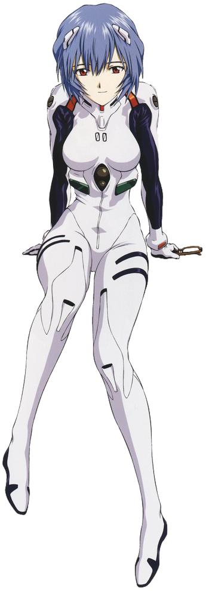

Shinji Ikari
Shinji Ikari is the Third Child, the main protagonist of the series and the designated pilot of Evangelion Unit-01. He is the son of Gehirn bioengineer Yui Ikari and NERV Commander (formerly Chief of Gehirn) Gendo Ikari. After his mother's death, he was abandoned by his father and lived for 11 years with his sensei, until he was summoned to Tokyo-3 to pilot Unit-01 against the Angels. He lives initially just with Misato Katsuragi; they are later joined by Asuka Langley Soryu.

Asuka Langley Sohryu
Asuka Langley Sohryu is a 14-year-old fictional character from the Neon Genesis Evangelion franchise and one of the main female characters. Asuka is designated as the Second Child ("Second Children" in the original Japanese versions) of the Evangelion Project and pilots the Evangelion Unit-02. Her surname is romanized as Soryu in the English manga and Sohryu in the English version of the TV series, the English version of the anime movie and on Gainax's website.

Rei Ayanami
Rei Ayanami is a fictional character from the Neon Genesis Evangelion franchise. She is the First Child, First Children in the Japanese version, the pilot of Evangelion Unit-00 and one of the central characters. At the beginning of the series, little is known about Rei and her stoic personality puzzles her peers. As the series progresses, her personality evolves and she becomes more involved with the people around her, particularly her classmate and fellow Eva pilot Shinji Ikari. In the concluding events of the storyline, the audience learns that Rei's mysterious origins tie into the story's resolution. Her role in this conclusion is not made clear in the TV series, but is one of the principal plot points of The End of Evangelion.